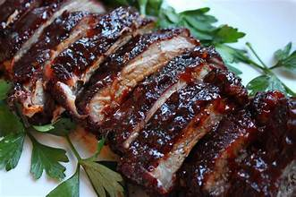

Ribs

Oven-baked Ribs
Easy oven baked ribs that are tender and have the flavor to keep people asking for more
Ingredients:
Steps:
- Cut off back membrane (helps improve tenderness)
- Generously apply rub to both sides
- Cover ribs in foil and place bone side down for 4 hours at 275 degrees
- Optional: Last hour apply bbq sauce